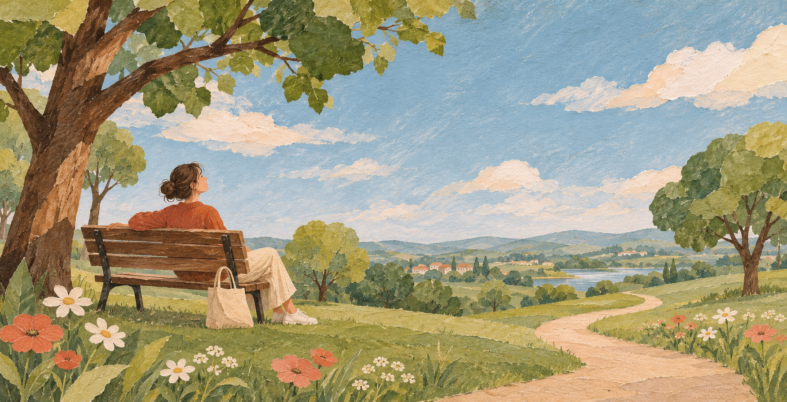

Иногда всё вроде бы хорошо, а внутри остаётся чувство: чего-то не хватает. В этой философии оно называется внутренним вакуумом. Главная мысль проста: нам не обязательно полностью избавиться от этого чувства, чтобы жить, любить и замечать хорошее.
Это взгляд на жизнь и повод для размышления, а не научная теория.

01Почему нам всё время чего-то хочется
Мы ищем отношения, деньги, признание, новые места и впечатления. За разными желаниями могут стоять похожие потребности: чувствовать себя в безопасности, нужным, свободным.
Получив желаемое, мы радуемся. Потом привыкаем — и порой снова чего-то хотим. В этой концепции ощущение нехватки может подталкивать нас искать, узнавать и создавать.
- Чего-то
не хватает - Ищу
и получаю - Радуюсь
- Привыкаю
Это возможный круг желаний, а не объяснение всех человеческих поступков. Даже когда нам хорошо, отношения, здоровье и любимые дела продолжают требовать заботы.
02Не каждую паузу нужно заполнять
Еда, сон и безопасность необходимы. Но из этого не следует, что каждую свободную минуту нужно занимать покупками, работой или развлечениями.
Иногда тишина, скука и прогулка без телефона дают возможность услышать себя: чего я хочу сейчас? Даже отказ от привычных удовольствий не обязательно прекращает поиск — он может превратиться в стремление к спокойствию или духовному опыту.
03А если пустота напоминает о чём-то забытом
У этой философии есть более смелое предположение: возможно, наше существование не начинается с рождения, а внутреннее чувство нехватки — отголосок какого-то прежнего состояния.
В такой картине рождение — переход к земной жизни. Мозг и тело задают границы доступного опыта, а воспоминания о прежнем состоянии остаются недоступными. Смерть здесь представляется возвращением к истоку. Всё это — метафоры и предположения, подтверждения которым у нас нет.
Рождение и смерть — известные границы человеческой жизни. О том, есть ли личный опыт за этими границами, эта концепция лишь задаёт вопрос. Ограниченность наших знаний сама по себе ничего не доказывает.
04Жизнь не обязана быть идеальной
Мы легко придумываем условия: «Вот стану успешнее, встречу нужного человека, всё устрою — тогда заживу». Но многое от нас не зависит, а сравнение с идеальной картинкой может усиливать чувство нехватки.
Можно иметь цели и менять обстоятельства, не требуя от себя безупречного жизненного сценария. Возможно, смысл жизни — в самом проживании: видеть мир, встречать людей, чувствовать, ошибаться и узнавать новое.
05Любовь как ориентир
У этой философии нет универсального ответа, кем быть и что успеть. Есть мягкий ориентир: чем бы мы ни занимались, хорошо бы сохранять в сердце любовь — к людям, природе, себе и жизни.
Она не отменяет боль и не гарантирует постоянного счастья. Но может помогать бережнее относиться к тому, что есть, и замечать то, ради чего хочется жить.
Не обязательно ждать полной внутренней ясности, чтобы ценить жизнь. Можно продолжать искать ответы — и уже сейчас любить, чувствовать и быть здесь.